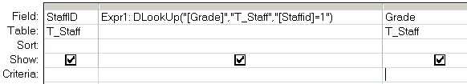

Get the value of a particular field from a specified set of records.
Syntax
Dlookup ( expression, domain, [criteria] )
=Dlookup("[Field]", "Table", "[Field] = 'MyValue'")
Key
expression The field to return.
domain The set of records, a table or a query name.
criteria Equivalent to an (optional) WHERE clause.
Any field that is included in criteria must
also be a field in domain.
For numerical criteria use "abc=Num"
for strings use "abc='string'"
for dates use "abc=#date#"
The DLookup() function can be used in VBA or in an SQL query.
Examples
In a query:

In VBA:
Dlookup("price", "T_Orders", "SupplierID = 64 ")
“If you are planning for a year, sow rice; if you are planning for a decade, plant trees; if you are planning for a lifetime, educate people” ~ Chinese Proverb
Related:
Last (SQL) - Return the last value from a query.
Nz - Detect a NULL value or Zero Length string.